This chapter covers
This chapter is designed to get you started with using neural networks to solve real problems. You’ll consolidate the knowledge you gained from our first practical example in chapter 2, and you’ll apply what you’ve learned to three new problems covering the three most common use cases of neural networks: binary classification, multiclass classification, and scalar regression.
In this chapter, we’ll take a closer look at the core components of neural networks that we introduced in chapter 2: layers, networks, objective functions, and optimizers. We’ll give you a quick introduction to Keras, the Python deep-learning library that we’ll use throughout the book. You’ll set up a deep-learning workstation, with TensorFlow, Keras, and GPU support. We’ll dive into three introductory examples of how to use neural networks to address real problems:
By the end of this chapter, you’ll be able to use neural networks to solve simple machine problems such as classification and regression over vector data. You’ll then be ready to start building a more principled, theory-driven understanding of machine learning in chapter 4.
As you saw in the previous chapters, training a neural network revolves around the following objects:
You can visualize their interaction as illustrated in figure 3.1: the network, composed of layers that are chained together, maps the input data to predictions. The loss function then compares these predictions to the targets, producing a loss value: a measure of how well the network’s predictions match what was expected. The optimizer uses this loss value to update the network’s weights.
Figure 3.1. Relationship between the network, layers, loss function, and optimizer
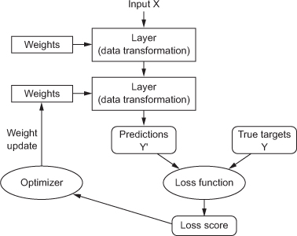
Let’s take a closer look at layers, networks, loss functions, and optimizers.
The fundamental data structure in neural networks is the layer, to which you were introduced in chapter 2. A layer is a data-processing module that takes as input one or more tensors and that outputs one or more tensors. Some layers are stateless, but more frequently layers have a state: the layer’s weights, one or several tensors learned with stochastic gradient descent, which together contain the network’s knowledge.
Different layers are appropriate for different tensor formats and different types of data processing. For instance, simple vector data, stored in 2D tensors of shape (samples, features), is often processed by densely connected layers, also called fully connected or dense layers (the Dense class in Keras). Sequence data, stored in 3D tensors of shape (samples, timesteps, features), is typically processed by recurrent layers such as an LSTM layer. Image data, stored in 4D tensors, is usually processed by 2D convolution layers (Conv2D).
You can think of layers as the LEGO bricks of deep learning, a metaphor that is made explicit by frameworks like Keras. Building deep-learning models in Keras is done by clipping together compatible layers to form useful data-transformation pipelines. The notion of layer compatibility here refers specifically to the fact that every layer will only accept input tensors of a certain shape and will return output tensors of a certain shape. Consider the following example:
from keras import layers
layer = layers.Dense(32, input_shape=(784,)) ❶
❶ A dense layer with 32 output units
We’re creating a layer that will only accept as input 2D tensors where the first dimension is 784 (axis 0, the batch dimension, is unspecified, and thus any value would be accepted). This layer will return a tensor where the first dimension has been transformed to be 32.
Thus this layer can only be connected to a downstream layer that expects 32-dimensional vectors as its input. When using Keras, you don’t have to worry about compatibility, because the layers you add to your models are dynamically built to match the shape of the incoming layer. For instance, suppose you write the following:
from keras import models from keras import layers model = models.Sequential() model.add(layers.Dense(32, input_shape=(784,))) model.add(layers.Dense(32))
The second layer didn’t receive an input shape argument—instead, it automatically inferred its input shape as being the output shape of the layer that came before.
A deep-learning model is a directed, acyclic graph of layers. The most common instance is a linear stack of layers, mapping a single input to a single output.
But as you move forward, you’ll be exposed to a much broader variety of network topologies. Some common ones include the following:
The topology of a network defines a hypothesis space. You may remember that in chapter 1, we defined machine learning as “searching for useful representations of some input data, within a predefined space of possibilities, using guidance from a feedback signal.” By choosing a network topology, you constrain your space of possibilities (hypothesis space) to a specific series of tensor operations, mapping input data to output data. What you’ll then be searching for is a good set of values for the weight tensors involved in these tensor operations.
Picking the right network architecture is more an art than a science; and although there are some best practices and principles you can rely on, only practice can help you become a proper neural-network architect. The next few chapters will both teach you explicit principles for building neural networks and help you develop intuition as to what works or doesn’t work for specific problems.
Once the network architecture is defined, you still have to choose two more things:
A neural network that has multiple outputs may have multiple loss functions (one per output). But the gradient-descent process must be based on a single scalar loss value; so, for multiloss networks, all losses are combined (via averaging) into a single scalar quantity.
Choosing the right objective function for the right problem is extremely important: your network will take any shortcut it can, to minimize the loss; so if the objective doesn’t fully correlate with success for the task at hand, your network will end up doing things you may not have wanted. Imagine a stupid, omnipotent AI trained via SGD, with this poorly chosen objective function: “maximizing the average well-being of all humans alive.” To make its job easier, this AI might choose to kill all humans except a few and focus on the well-being of the remaining ones—because average well-being isn’t affected by how many humans are left. That might not be what you intended! Just remember that all neural networks you build will be just as ruthless in lowering their loss function—so choose the objective wisely, or you’ll have to face unintended side effects.
Fortunately, when it comes to common problems such as classification, regression, and sequence prediction, there are simple guidelines you can follow to choose the correct loss. For instance, you’ll use binary crossentropy for a two-class classification problem, categorical crossentropy for a many-class classification problem, mean-squared error for a regression problem, connectionist temporal classification (CTC) for a sequence-learning problem, and so on. Only when you’re working on truly new research problems will you have to develop your own objective functions. In the next few chapters, we’ll detail explicitly which loss functions to choose for a wide range of common tasks.
Throughout this book, the code examples use Keras (https://keras.io). Keras is a deep-learning framework for Python that provides a convenient way to define and train almost any kind of deep-learning model. Keras was initially developed for researchers, with the aim of enabling fast experimentation.
Keras has the following key features:
Keras is distributed under the permissive MIT license, which means it can be freely used in commercial projects. It’s compatible with any version of Python from 2.7 to 3.6 (as of mid-2017).
Keras has well over 200,000 users, ranging from academic researchers and engineers at both startups and large companies to graduate students and hobbyists. Keras is used at Google, Netflix, Uber, CERN, Yelp, Square, and hundreds of startups working on a wide range of problems. Keras is also a popular framework on Kaggle, the machine-learning competition website, where almost every recent deep-learning competition has been won using Keras models.
Figure 3.2. Google web search interest for different deep-learning frameworks over time
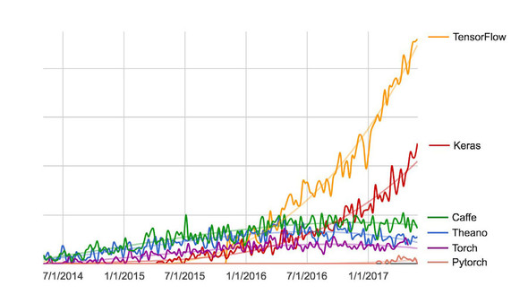
Keras is a model-level library, providing high-level building blocks for developing deep-learning models. It doesn’t handle low-level operations such as tensor manipulation and differentiation. Instead, it relies on a specialized, well-optimized tensor library to do so, serving as the backend engine of Keras. Rather than choosing a single tensor library and tying the implementation of Keras to that library, Keras handles the problem in a modular way (see figure 3.3); thus several different backend engines can be plugged seamlessly into Keras. Currently, the three existing backend implementations are the TensorFlow backend, the Theano backend, and the Microsoft Cognitive Toolkit (CNTK) backend. In the future, it’s likely that Keras will be extended to work with even more deep-learning execution engines.
Figure 3.3. The deep-learning software and hardware stack
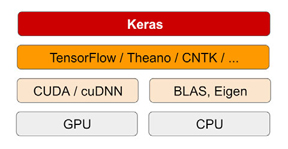
TensorFlow, CNTK, and Theano are some of the primary platforms for deep learning today. Theano (http://deeplearning.net/software/theano) is developed by the MILA lab at Université de Montréal, TensorFlow (www.tensorflow.org) is developed by Google, and CNTK (https://github.com/Microsoft/CNTK) is developed by Microsoft. Any piece of code that you write with Keras can be run with any of these backends without having to change anything in the code: you can seamlessly switch between the two during development, which often proves useful—for instance, if one of these backends proves to be faster for a specific task. We recommend using the TensorFlow backend as the default for most of your deep-learning needs, because it’s the most widely adopted, scalable, and production ready.
Via TensorFlow (or Theano, or CNTK), Keras is able to run seamlessly on both CPUs and GPUs. When running on CPU, TensorFlow is itself wrapping a low-level library for tensor operations called Eigen (http://eigen.tuxfamily.org). On GPU, Tensor-Flow wraps a library of well-optimized deep-learning operations called the NVIDIA CUDA Deep Neural Network library (cuDNN).
You’ve already seen one example of a Keras model: the MNIST example. The typical Keras workflow looks just like that example:
There are two ways to define a model: using the Sequential class (only for linear stacks of layers, which is the most common network architecture by far) or the functional API (for directed acyclic graphs of layers, which lets you build completely arbitrary architectures).
As a refresher, here’s a two-layer model defined using the Sequential class (note that we’re passing the expected shape of the input data to the first layer):
from keras import models from keras import layers model = models.Sequential() model.add(layers.Dense(32, activation='relu', input_shape=(784,))) model.add(layers.Dense(10, activation='softmax'))
And here’s the same model defined using the functional API:
input_tensor = layers.Input(shape=(784,)) x = layers.Dense(32, activation='relu')(input_tensor) output_tensor = layers.Dense(10, activation='softmax')(x) model = models.Model(inputs=input_tensor, outputs=output_tensor)
With the functional API, you’re manipulating the data tensors that the model processes and applying layers to this tensor as if they were functions.
Note
A detailed guide to what you can do with the functional API can be found in chapter 7. Until chapter 7, we’ll only be using the Sequential class in our code examples.
Once your model architecture is defined, it doesn’t matter whether you used a Sequential model or the functional API. All of the following steps are the same.
The learning process is configured in the compilation step, where you specify the optimizer and loss function(s) that the model should use, as well as the metrics you want to monitor during training. Here’s an example with a single loss function, which is by far the most common case:
from keras import optimizers
model.compile(optimizer=optimizers.RMSprop(lr=0.001),
loss='mse',
metrics=['accuracy'])
Finally, the learning process consists of passing Numpy arrays of input data (and the corresponding target data) to the model via the fit() method, similar to what you would do in Scikit-Learn and several other machine-learning libraries:
model.fit(input_tensor, target_tensor, batch_size=128, epochs=10)
Over the next few chapters, you’ll build a solid intuition about what type of network architectures work for different kinds of problems, how to pick the right learning configuration, and how to tweak a model until it gives the results you want to see. We’ll look at three basic examples in sections 3.4, 3.5, and 3.6: a two-class classification example, a many-class classification example, and a regression example.
Before you can get started developing deep-learning applications, you need to set up your workstation. It’s highly recommended, although not strictly necessary, that you run deep-learning code on a modern NVIDIA GPU. Some applications—in particular, image processing with convolutional networks and sequence processing with recurrent neural networks—will be excruciatingly slow on CPU, even a fast multicore CPU. And even for applications that can realistically be run on CPU, you’ll generally see speed increase by a factor or 5 or 10 by using a modern GPU. If you don’t want to install a GPU on your machine, you can alternatively consider running your experiments on an AWS EC2 GPU instance or on Google Cloud Platform. But note that cloud GPU instances can become expensive over time.
Whether you’re running locally or in the cloud, it’s better to be using a Unix workstation. Although it’s technically possible to use Keras on Windows (all three Keras backends support Windows), We don’t recommend it. In the installation instructions in appendix A, we’ll consider an Ubuntu machine. If you’re a Windows user, the simplest solution to get everything running is to set up an Ubuntu dual boot on your machine. It may seem like a hassle, but using Ubuntu will save you a lot of time and trouble in the long run.
Note that in order to use Keras, you need to install TensorFlow or CNTK or Theano (or all of them, if you want to be able to switch back and forth among the three backends). In this book, we’ll focus on TensorFlow, with some light instructions relative to Theano. We won’t cover CNTK.
Jupyter notebooks are a great way to run deep-learning experiments—in particular, the many code examples in this book. They’re widely used in the data-science and machine-learning communities. A notebook is a file generated by the Jupyter Notebook app (https://jupyter.org), which you can edit in your browser. It mixes the ability to execute Python code with rich text-editing capabilities for annotating what you’re doing. A notebook also allows you to break up long experiments into smaller pieces that can be executed independently, which makes development interactive and means you don’t have to rerun all of your previous code if something goes wrong late in an experiment.
We recommend using Jupyter notebooks to get started with Keras, although that isn’t a requirement: you can also run standalone Python scripts or run code from within an IDE such as PyCharm. All the code examples in this book are available as open source notebooks; you can download them from the book’s website at www.manning.com/books/deep-learning-with-python.
To get started in practice, we recommend one of the following two options:
Let’s take a closer look at some of the compromises involved in picking one option over the other.
If you don’t already have a GPU that you can use for deep learning (a recent, high-end NVIDIA GPU), then running deep-learning experiments in the cloud is a simple, low-cost way for you to get started without having to buy any additional hardware. If you’re using Jupyter notebooks, the experience of running in the cloud is no different from running locally. As of mid-2017, the cloud offering that makes it easiest to get started with deep learning is definitely AWS EC2. Appendix B provides a step-by-step guide to running Jupyter notebooks on a EC2 GPU instance.
But if you’re a heavy user of deep learning, this setup isn’t sustainable in the long term—or even for more than a few weeks. EC2 instances are expensive: the instance type recommended in appendix B (the p2.xlarge instance, which won’t provide you with much power) costs $0.90 per hour as of mid-2017. Meanwhile, a solid consumer-class GPU will cost you somewhere between $1,000 and $1,500—a price that has been fairly stable over time, even as the specs of these GPUs keep improving. If you’re serious about deep learning, you should set up a local workstation with one or more GPUs.
In short, EC2 is a great way to get started. You could follow the code examples in this book entirely on an EC2 GPU instance. But if you’re going to be a power user of deep learning, get your own GPUs.
If you’re going to buy a GPU, which one should you choose? The first thing to note is that it must be an NVIDIA GPU. NVIDIA is the only graphics computing company that has invested heavily in deep learning so far, and modern deep-learning frameworks can only run on NVIDIA cards.
As of mid-2017, we recommend the NVIDIA TITAN Xp as the best card on the market for deep learning. For lower budgets, you may want to consider the GTX 1060. If you’re reading these pages in 2018 or later, take the time to look online for fresher recommendations, because new models come out every year.
From this section onward, we’ll assume that you have access to a machine with Keras and its dependencies installed—preferably with GPU support. Make sure you finish this step before you proceed. Go through the step-by-step guides in the appendixes, and look online if you need further help. There is no shortage of tutorials on how to install Keras and common deep-learning dependencies.
We can now dive into practical Keras examples.
Two-class classification, or binary classification, may be the most widely applied kind of machine-learning problem. In this example, you’ll learn to classify movie reviews as positive or negative, based on the text content of the reviews.
You’ll work with the IMDB dataset: a set of 50,000 highly polarized reviews from the Internet Movie Database. They’re split into 25,000 reviews for training and 25,000 reviews for testing, each set consisting of 50% negative and 50% positive reviews.
Why use separate training and test sets? Because you should never test a machine-learning model on the same data that you used to train it! Just because a model performs well on its training data doesn’t mean it will perform well on data it has never seen; and what you care about is your model’s performance on new data (because you already know the labels of your training data—obviously you don’t need your model to predict those). For instance, it’s possible that your model could end up merely memorizing a mapping between your training samples and their targets, which would be useless for the task of predicting targets for data the model has never seen before. We’ll go over this point in much more detail in the next chapter.
Just like the MNIST dataset, the IMDB dataset comes packaged with Keras. It has already been preprocessed: the reviews (sequences of words) have been turned into sequences of integers, where each integer stands for a specific word in a dictionary.
The following code will load the dataset (when you run it the first time, about 80 MB of data will be downloaded to your machine).
Listing 3.1. Loading the IMDB dataset
from keras.datasets import imdb
(train_data, train_labels), (test_data, test_labels) = imdb.load_data(
num_words=10000)
The argument num_words=10000 means you’ll only keep the top 10,000 most frequently occurring words in the training data. Rare words will be discarded. This allows you to work with vector data of manageable size.
The variables train_data and test_data are lists of reviews; each review is a list of word indices (encoding a sequence of words). train_labels and test_labels are lists of 0s and 1s, where 0 stands for negative and 1 stands for positive:
>>> train_data[0] [1, 14, 22, 16, ... 178, 32] >>> train_labels[0] 1
Because you’re restricting yourself to the top 10,000 most frequent words, no word index will exceed 10,000:
>>> max([max(sequence) for sequence in train_data]) 9999
For kicks, here’s how you can quickly decode one of these reviews back to English words:
word_index = imdb.get_word_index() ❶ reverse_word_index = dict( [(value, key) for (key, value) in word_index.items()]) ❷ decoded_review = ' '.join( [reverse_word_index.get(i - 3, '?') for i in train_data[0]]) ❸
❶ word_index is a dictionary mapping words to an integer index.
❷ Reverses it, mapping integer indices to words
❸ Decodes the review. Note that the indices are offset by 3 because 0, 1, and 2 are reserved indices for “padding,” “start of sequence,” and “unknown.”
You can’t feed lists of integers into a neural network. You have to turn your lists into tensors. There are two ways to do that:
Let’s go with the latter solution to vectorize the data, which you’ll do manually for maximum clarity.
Listing 3.2. Encoding the integer sequences into a binary matrix
import numpy as np
def vectorize_sequences(sequences, dimension=10000):
results = np.zeros((len(sequences), dimension)) ❶
for i, sequence in enumerate(sequences):
results[i, sequence] = 1. ❷
return results
x_train = vectorize_sequences(train_data) ❸
x_test = vectorize_sequences(test_data) ❹
❶ Creates an all-zero matrix of shape (len(sequences), dimension)
❷ Sets specific indices of results[i] to 1s
❸ Vectorized training data
❹ Vectorized test data
Here’s what the samples look like now:
>>> x_train[0] array([ 0., 1., 1., ..., 0., 0., 0.])
You should also vectorize your labels, which is straightforward:
y_train = np.asarray(train_labels).astype('float32')
y_test = np.asarray(test_labels).astype('float32')
Now the data is ready to be fed into a neural network.
The input data is vectors, and the labels are scalars (1s and 0s): this is the easiest setup you’ll ever encounter. A type of network that performs well on such a problem is a simple stack of fully connected (Dense) layers with relu activations: Dense(16, activation='relu').
The argument being passed to each Dense layer (16) is the number of hidden units of the layer. A hidden unit is a dimension in the representation space of the layer. You may remember from chapter 2 that each such Dense layer with a relu activation implements the following chain of tensor operations:
output = relu(dot(W, input) + b)
Having 16 hidden units means the weight matrix W will have shape (input_dimension, 16): the dot product with W will project the input data onto a 16-dimensional representation space (and then you’ll add the bias vector b and apply the relu operation). You can intuitively understand the dimensionality of your representation space as “how much freedom you’re allowing the network to have when learning internal representations.” Having more hidden units (a higher-dimensional representation space) allows your network to learn more-complex representations, but it makes the network more computationally expensive and may lead to learning unwanted patterns (patterns that will improve performance on the training data but not on the test data).
There are two key architecture decisions to be made about such a stack of Dense layers:
In chapter 4, you’ll learn formal principles to guide you in making these choices. For the time being, you’ll have to trust me with the following architecture choice:
The intermediate layers will use relu as their activation function, and the final layer will use a sigmoid activation so as to output a probability (a score between 0 and 1, indicating how likely the sample is to have the target “1”: how likely the review is to be positive). A relu (rectified linear unit) is a function meant to zero out negative values (see figure 3.4), whereas a sigmoid “squashes” arbitrary values into the [0, 1] interval (see figure 3.5), outputting something that can be interpreted as a probability.
Figure 3.4. The rectified linear unit function
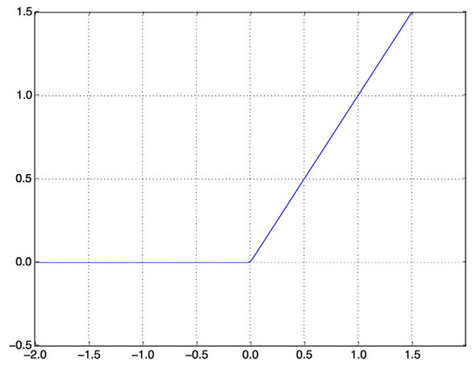
Figure 3.5. The sigmoid function
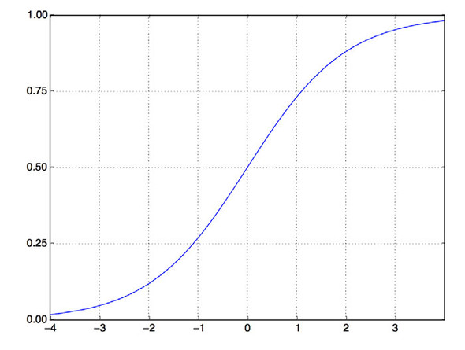
Figure 3.6 shows what the network looks like. And here’s the Keras implementation, similar to the MNIST example you saw previously.
Figure 3.6. The three-layer network
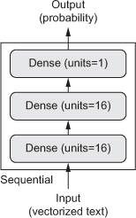
Listing 3.3. The model definition
from keras import models from keras import layers model = models.Sequential() model.add(layers.Dense(16, activation='relu', input_shape=(10000,))) model.add(layers.Dense(16, activation='relu')) model.add(layers.Dense(1, activation='sigmoid'))
Without an activation function like relu (also called a non-linearity), the Dense layer would consist of two linear operations—a dot product and an addition:
output = dot(W, input) + b
So the layer could only learn linear transformations (affine transformations) of the input data: the hypothesis space of the layer would be the set of all possible linear transformations of the input data into a 16-dimensional space. Such a hypothesis space is too restricted and wouldn’t benefit from multiple layers of representations, because a deep stack of linear layers would still implement a linear operation: adding more layers wouldn’t extend the hypothesis space.
In order to get access to a much richer hypothesis space that would benefit from deep representations, you need a non-linearity, or activation function. relu is the most popular activation function in deep learning, but there are many other candidates, which all come with similarly strange names: prelu, elu, and so on.
Finally, you need to choose a loss function and an optimizer. Because you’re facing a binary classification problem and the output of your network is a probability (you end your network with a single-unit layer with a sigmoid activation), it’s best to use the binary_crossentropy loss. It isn’t the only viable choice: you could use, for instance, mean_squared_error. But crossentropy is usually the best choice when you’re dealing with models that output probabilities. Crossentropy is a quantity from the field of Information Theory that measures the distance between probability distributions or, in this case, between the ground-truth distribution and your predictions.
Here’s the step where you configure the model with the rmsprop optimizer and the binary_crossentropy loss function. Note that you’ll also monitor accuracy during training.
Listing 3.4. Compiling the model
model.compile(optimizer='rmsprop',
loss='binary_crossentropy',
metrics=['accuracy'])
You’re passing your optimizer, loss function, and metrics as strings, which is possible because rmsprop, binary_crossentropy, and accuracy are packaged as part of Keras. Sometimes you may want to configure the parameters of your optimizer or pass a custom loss function or metric function. The former can be done by passing an optimizer class instance as the optimizer argument, as shown in listing 3.5; the latter can be done by passing function objects as the loss and/or metrics arguments, as shown in listing 3.6.
Listing 3.5. Configuring the optimizer
from keras import optimizers
model.compile(optimizer=optimizers.RMSprop(lr=0.001),
loss='binary_crossentropy',
metrics=['accuracy'])
Listing 3.6. Using custom losses and metrics
from keras import losses
from keras import metrics
model.compile(optimizer=optimizers.RMSprop(lr=0.001),
loss=losses.binary_crossentropy,
metrics=[metrics.binary_accuracy])
In order to monitor during training the accuracy of the model on data it has never seen before, you’ll create a validation set by setting apart 10,000 samples from the original training data.
Listing 3.7. Setting aside a validation set
x_val = x_train[:10000] partial_x_train = x_train[10000:] y_val = y_train[:10000] partial_y_train = y_train[10000:]
You’ll now train the model for 20 epochs (20 iterations over all samples in the x_train and y_train tensors), in mini-batches of 512 samples. At the same time, you’ll monitor loss and accuracy on the 10,000 samples that you set apart. You do so by passing the validation data as the validation_data argument.
Listing 3.8. Training your model
model.compile(optimizer='rmsprop',
loss='binary_crossentropy',
metrics=['acc'])
history = model.fit(partial_x_train,
partial_y_train,
epochs=20,
batch_size=512,
validation_data=(x_val, y_val))
On CPU, this will take less than 2 seconds per epoch—training is over in 20 seconds. At the end of every epoch, there is a slight pause as the model computes its loss and accuracy on the 10,000 samples of the validation data.
Note that the call to model.fit() returns a History object. This object has a member history, which is a dictionary containing data about everything that happened during training. Let’s look at it:
>>> history_dict = history.history >>> history_dict.keys() [u'acc', u'loss', u'val_acc', u'val_loss']
The dictionary contains four entries: one per metric that was being monitored during training and during validation. In the following two listing, let’s use Matplotlib to plot the training and validation loss side by side (see figure 3.7), as well as the training and validation accuracy (see figure 3.8). Note that your own results may vary slightly due to a different random initialization of your network.
Listing 3.9 Plotting the training and validation loss
import matplotlib.pyplot as plt history_dict = history.history loss_values = history_dict['loss'] val_loss_values = history_dict['val_loss'] epochs = range(1, len(loss_values) + 1) plt.plot(epochs, loss_values, 'bo', label='Training loss') ❶ plt.plot(epochs, val_loss_values, 'b', label='Validation loss') ❷ plt.title('Training and validation loss') plt.xlabel('Epochs') plt.ylabel('Loss') plt.legend() plt.show()
❶ “bo” is for “blue dot.”
❷ “b” is for “solid blue line.”
Figure 3.7. Training and validation loss
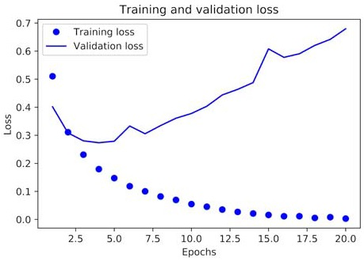
Listing 3.10. Plotting the training and validation accuracy
plt.clf() ❶
acc = history_dict['acc']
val_acc = history_dict['val_acc']
plt.plot(epochs, acc, 'bo', label='Training acc')
plt.plot(epochs, val_acc, 'b', label='Validation acc')
plt.title('Training and validation accuracy')
plt.xlabel('Epochs')
plt.ylabel('Accuracy')
plt.legend()
plt.show()
Figure 3.8. Training and validation accuracy
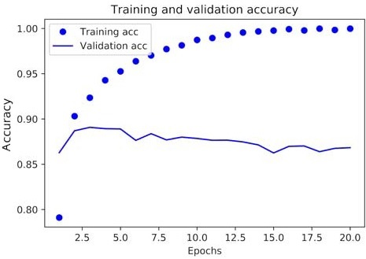
Listing 3.9. Plotting the training and validation loss
As you can see, the training loss decreases with every epoch, and the training accuracy increases with every epoch. That’s what you would expect when running gradient-descent optimization—the quantity you’re trying to minimize should be less with every iteration. But that isn’t the case for the validation loss and accuracy: they seem to peak at the fourth epoch. This is an example of what we warned against earlier: a model that performs better on the training data isn’t necessarily a model that will do better on data it has never seen before. In precise terms, what you’re seeing is overfitting: after the second epoch, you’re overoptimizing on the training data, and you end up learning representations that are specific to the training data and don’t generalize to data outside of the training set.
In this case, to prevent overfitting, you could stop training after three epochs. In general, you can use a range of techniques to mitigate overfitting, which we’ll cover in chapter 4.
Let’s train a new network from scratch for four epochs and then evaluate it on the test data.
Listing 3.11. Retraining a model from scratch
model = models.Sequential()
model.add(layers.Dense(16, activation='relu', input_shape=(10000,)))
model.add(layers.Dense(16, activation='relu'))
model.add(layers.Dense(1, activation='sigmoid'))
model.compile(optimizer='rmsprop',
loss='binary_crossentropy',
metrics=['accuracy'])
model.fit(x_train, y_train, epochs=4, batch_size=512)
results = model.evaluate(x_test, y_test)
The final results are as follows:
>>> results [0.2929924130630493, 0.88327999999999995]
This fairly naive approach achieves an accuracy of 88%. With state-of-the-art approaches, you should be able to get close to 95%.
After having trained a network, you’ll want to use it in a practical setting. You can generate the likelihood of reviews being positive by using the predict method:
>>> model.predict(x_test)
array([[ 0.98006207]
[ 0.99758697]
[ 0.99975556]
...,
[ 0.82167041]
[ 0.02885115]
[ 0.65371346]], dtype=float32)
As you can see, the network is confident for some samples (0.99 or more, or 0.01 or less) but less confident for others (0.6, 0.4).
The following experiments will help convince you that the architecture choices you’ve made are all fairly reasonable, although there’s still room for improvement:
Here’s what you should take away from this example:
In the previous section, you saw how to classify vector inputs into two mutually exclusive classes using a densely connected neural network. But what happens when you have more than two classes?
In this section, you’ll build a network to classify Reuters newswires into 46 mutually exclusive topics. Because you have many classes, this problem is an instance of multiclass classification; and because each data point should be classified into only one category, the problem is more specifically an instance of single-label, multiclass classification. If each data point could belong to multiple categories (in this case, topics), you’d be facing a multilabel, multiclass classification problem.
You’ll work with the Reuters dataset, a set of short newswires and their topics, published by Reuters in 1986. It’s a simple, widely used toy dataset for text classification. There are 46 different topics; some topics are more represented than others, but each topic has at least 10 examples in the training set.
Like IMDB and MNIST, the Reuters dataset comes packaged as part of Keras. Let’s take a look.
Listing 3.12. Loading the Reuters dataset
from keras.datasets import reuters
(train_data, train_labels), (test_data, test_labels) = reuters.load_data(
num_words=10000)
As with the IMDB dataset, the argument num_words=10000 restricts the data to the 10,000 most frequently occurring words found in the data.
You have 8,982 training examples and 2,246 test examples:
>>> len(train_data) 8982 >>> len(test_data) 2246
As with the IMDB reviews, each example is a list of integers (word indices):
>>> train_data[10] [1, 245, 273, 207, 156, 53, 74, 160, 26, 14, 46, 296, 26, 39, 74, 2979, 3554, 14, 46, 4689, 4329, 86, 61, 3499, 4795, 14, 61, 451, 4329, 17, 12]
Here’s how you can decode it back to words, in case you’re curious.
Listing 3.13. Decoding newswires back to text
word_index = reuters.get_word_index()
reverse_word_index = dict([(value, key) for (key, value) in word_index.items()])
decoded_newswire = ' '.join([reverse_word_index.get(i - 3, '?') for i in
train_data[0]]) ❶
❶ Note that the indices are offset by 3 because 0, 1, and 2 are reserved indices for “padding,” “start of sequence,” and “unknown.”
The label associated with an example is an integer between 0 and 45—a topic index:
>>> train_labels[10] 3
You can vectorize the data with the exact same code as in the previous example.
Listing 3.14. Encoding the data
import numpy as np
def vectorize_sequences(sequences, dimension=10000):
results = np.zeros((len(sequences), dimension))
for i, sequence in enumerate(sequences):
results[i, sequence] = 1.
return results
x_train = vectorize_sequences(train_data) ❶
x_test = vectorize_sequences(test_data) ❷
❶ Vectorized training data
❷ Vectorized test data
To vectorize the labels, there are two possibilities: you can cast the label list as an integer tensor, or you can use one-hot encoding. One-hot encoding is a widely used format for categorical data, also called categorical encoding. For a more detailed explanation of one-hot encoding, see section 6.1. In this case, one-hot encoding of the labels consists of embedding each label as an all-zero vector with a 1 in the place of the label index. Here’s an example:
def to_one_hot(labels, dimension=46):
results = np.zeros((len(labels), dimension))
for i, label in enumerate(labels):
results[i, label] = 1.
return results
one_hot_train_labels = to_one_hot(train_labels) ❶
one_hot_test_labels = to_one_hot(test_labels) ❷
❶ Vectorized training labels
❷ Vectorized test labels
Note that there is a built-in way to do this in Keras, which you’ve already seen in action in the MNIST example:
from keras.utils.np_utils import to_categorical one_hot_train_labels = to_categorical(train_labels) one_hot_test_labels = to_categorical(test_labels)
This topic-classification problem looks similar to the previous movie-review classification problem: in both cases, you’re trying to classify short snippets of text. But there is a new constraint here: the number of output classes has gone from 2 to 46. The dimensionality of the output space is much larger.
In a stack of Dense layers like that you’ve been using, each layer can only access information present in the output of the previous layer. If one layer drops some information relevant to the classification problem, this information can never be recovered by later layers: each layer can potentially become an information bottleneck. In the previous example, you used 16-dimensional intermediate layers, but a 16-dimensional space may be too limited to learn to separate 46 different classes: such small layers may act as information bottlenecks, permanently dropping relevant information.
For this reason you’ll use larger layers. Let’s go with 64 units.
Listing 3.15. Model definition
from keras import models from keras import layers model = models.Sequential() model.add(layers.Dense(64, activation='relu', input_shape=(10000,))) model.add(layers.Dense(64, activation='relu')) model.add(layers.Dense(46, activation='softmax'))
There are two other things you should note about this architecture:
The best loss function to use in this case is categorical_crossentropy. It measures the distance between two probability distributions: here, between the probability distribution output by the network and the true distribution of the labels. By minimizing the distance between these two distributions, you train the network to output something as close as possible to the true labels.
Listing 3.16. Compiling the model
model.compile(optimizer='rmsprop',
loss='categorical_crossentropy',
metrics=['accuracy'])
Let’s set apart 1,000 samples in the training data to use as a validation set.
Listing 3.17. Setting aside a validation set
x_val = x_train[:1000] partial_x_train = x_train[1000:] y_val = one_hot_train_labels[:1000] partial_y_train = one_hot_train_labels[1000:]
Now, let’s train the network for 20 epochs.
Listing 3.18. Training the model
history = model.fit(partial_x_train,
partial_y_train,
epochs=20,
batch_size=512,
validation_data=(x_val, y_val))
And finally, let’s display its loss and accuracy curves (see figures 3.9 and 3.10).
Figure 3.9. Training and validation loss
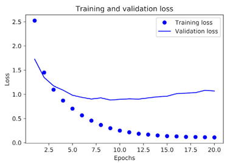
Figure 3.10. Training and validation accuracy
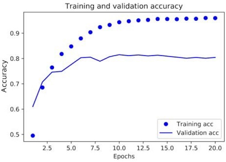
Listing 3.19. Plotting the training and validation loss
import matplotlib.pyplot as plt
loss = history.history['loss']
val_loss = history.history['val_loss']
epochs = range(1, len(loss) + 1)
plt.plot(epochs, loss, 'bo', label='Training loss')
plt.plot(epochs, val_loss, 'b', label='Validation loss')
plt.title('Training and validation loss')
plt.xlabel('Epochs')
plt.ylabel('Loss')
plt.legend()
plt.show()
Listing 3.20. Plotting the training and validation accuracy
plt.clf() ❶
acc = history.history['acc']
val_acc = history.history['val_acc']
plt.plot(epochs, acc, 'bo', label='Training acc')
plt.plot(epochs, val_acc, 'b', label='Validation acc')
plt.title('Training and validation accuracy')
plt.xlabel('Epochs')
plt.ylabel('Accuracy')
plt.legend()
plt.show()
The network begins to overfit after nine epochs. Let’s train a new network from scratch for nine epochs and then evaluate it on the test set.
Listing 3.21. Retraining a model from scratch
model = models.Sequential()
model.add(layers.Dense(64, activation='relu', input_shape=(10000,)))
model.add(layers.Dense(64, activation='relu'))
model.add(layers.Dense(46, activation='softmax'))
model.compile(optimizer='rmsprop',
loss='categorical_crossentropy',
metrics=['accuracy'])
model.fit(partial_x_train,
partial_y_train,
epochs=9,
batch_size=512,
validation_data=(x_val, y_val))
results = model.evaluate(x_test, one_hot_test_labels)
>>> results [0.9565213431445807, 0.79697239536954589]
This approach reaches an accuracy of ~80%. With a balanced binary classification problem, the accuracy reached by a purely random classifier would be 50%. But in this case it’s closer to 19%, so the results seem pretty good, at least when compared to a random baseline:
>>> import copy >>> test_labels_copy = copy.copy(test_labels) >>> np.random.shuffle(test_labels_copy) >>> hits_array = np.array(test_labels) == np.array(test_labels_copy) >>> float(np.sum(hits_array)) / len(test_labels) 0.18655387355298308
You can verify that the predict method of the model instance returns a probability distribution over all 46 topics. Let’s generate topic predictions for all of the test data.
Listing 3.22. Generating predictions for new data
predictions = model.predict(x_test)
Each entry in predictions is a vector of length 46:
>>> predictions[0].shape (46,)
The coefficients in this vector sum to 1:
>>> np.sum(predictions[0]) 1.0
The largest entry is the predicted class—the class with the highest probability:
>>> np.argmax(predictions[0]) 4
We mentioned earlier that another way to encode the labels would be to cast them as an integer tensor, like this:
y_train = np.array(train_labels) y_test = np.array(test_labels)
The only thing this approach would change is the choice of the loss function. The loss function used in listing 3.21, categorical_crossentropy, expects the labels to follow a categorical encoding. With integer labels, you should use sparse_categorical_crossentropy:
model.compile(optimizer='rmsprop',
loss='sparse_categorical_crossentropy',
metrics=['acc'])
This new loss function is still mathematically the same as categorical_crossentropy; it just has a different interface.
We mentioned earlier that because the final outputs are 46-dimensional, you should avoid intermediate layers with many fewer than 46 hidden units. Now let’s see what happens when you introduce an information bottleneck by having intermediate layers that are significantly less than 46-dimensional: for example, 4-dimensional.
Listing 3.23. A model with an information bottleneck
model = models.Sequential()
model.add(layers.Dense(64, activation='relu', input_shape=(10000,)))
model.add(layers.Dense(4, activation='relu'))
model.add(layers.Dense(46, activation='softmax'))
model.compile(optimizer='rmsprop',
loss='categorical_crossentropy',
metrics=['accuracy'])
model.fit(partial_x_train,
partial_y_train,
epochs=20,
batch_size=128,
validation_data=(x_val, y_val))
The network now peaks at ~71% validation accuracy, an 8% absolute drop. This drop is mostly due to the fact that you’re trying to compress a lot of information (enough information to recover the separation hyperplanes of 46 classes) into an intermediate space that is too low-dimensional. The network is able to cram most of the necessary information into these four-dimensional representations, but not all of it.
Here’s what you should take away from this example:
The two previous examples were considered classification problems, where the goal was to predict a single discrete label of an input data point. Another common type of machine-learning problem is regression, which consists of predicting a continuous value instead of a discrete label: for instance, predicting the temperature tomorrow, given meteorological data; or predicting the time that a software project will take to complete, given its specifications.
Note
Don’t confuse regression and the algorithm logistic regression. Confusingly, logistic regression isn’t a regression algorithm—it’s a classification algorithm.
You’ll attempt to predict the median price of homes in a given Boston suburb in the mid-1970s, given data points about the suburb at the time, such as the crime rate, the local property tax rate, and so on. The dataset you’ll use has an interesting difference from the two previous examples. It has relatively few data points: only 506, split between 404 training samples and 102 test samples. And each feature in the input data (for example, the crime rate) has a different scale. For instance, some values are proportions, which take values between 0 and 1; others take values between 1 and 12, others between 0 and 100, and so on.
Listing 3.24. Loading the Boston housing dataset
from keras.datasets import boston_housing
(train_data, train_targets), (test_data, test_targets) =
➥ boston_housing.load_data()
Let’s look at the data:
>>> train_data.shape (404, 13) >>> test_data.shape (102, 13)
As you can see, you have 404 training samples and 102 test samples, each with 13 numerical features, such as per capita crime rate, average number of rooms per dwelling, accessibility to highways, and so on.
The targets are the median values of owner-occupied homes, in thousands of dollars:
>>> train_targets [ 15.2, 42.3, 50. ... 19.4, 19.4, 29.1]
The prices are typically between $10,000 and $50,000. If that sounds cheap, remember that this was the mid-1970s, and these prices aren’t adjusted for inflation.
It would be problematic to feed into a neural network values that all take wildly different ranges. The network might be able to automatically adapt to such heterogeneous data, but it would definitely make learning more difficult. A widespread best practice to deal with such data is to do feature-wise normalization: for each feature in the input data (a column in the input data matrix), you subtract the mean of the feature and divide by the standard deviation, so that the feature is centered around 0 and has a unit standard deviation. This is easily done in Numpy.
Listing 3.25. Normalizing the data
mean = train_data.mean(axis=0) train_data -= mean std = train_data.std(axis=0) train_data /= std test_data -= mean test_data /= std
Note that the quantities used for normalizing the test data are computed using the training data. You should never use in your workflow any quantity computed on the test data, even for something as simple as data normalization.
Because so few samples are available, you’ll use a very small network with two hidden layers, each with 64 units. In general, the less training data you have, the worse overfitting will be, and using a small network is one way to mitigate overfitting.
Listing 3.26. Model definition
from keras import models
from keras import layers
def build_model():
model = models.Sequential() ❶
model.add(layers.Dense(64, activation='relu',
input_shape=(train_data.shape[1],)))
model.add(layers.Dense(64, activation='relu'))
model.add(layers.Dense(1))
model.compile(optimizer='rmsprop', loss='mse', metrics=['mae'])
return model
❶ Because you’ll need to instantiate the same model multiple times, you use a function to construct it.
The network ends with a single unit and no activation (it will be a linear layer). This is a typical setup for scalar regression (a regression where you’re trying to predict a single continuous value). Applying an activation function would constrain the range the output can take; for instance, if you applied a sigmoid activation function to the last layer, the network could only learn to predict values between 0 and 1. Here, because the last layer is purely linear, the network is free to learn to predict values in any range.
Note that you compile the network with the mse loss function—mean squared error, the square of the difference between the predictions and the targets. This is a widely used loss function for regression problems.
You’re also monitoring a new metric during training: mean absolute error (MAE). It’s the absolute value of the difference between the predictions and the targets. For instance, an MAE of 0.5 on this problem would mean your predictions are off by $500 on average.
To evaluate your network while you keep adjusting its parameters (such as the number of epochs used for training), you could split the data into a training set and a validation set, as you did in the previous examples. But because you have so few data points, the validation set would end up being very small (for instance, about 100 examples). As a consequence, the validation scores might change a lot depending on which data points you chose to use for validation and which you chose for training: the validation scores might have a high variance with regard to the validation split. This would prevent you from reliably evaluating your model.
The best practice in such situations is to use K-fold cross-validation (see figure 3.11). It consists of splitting the available data into K partitions (typically K = 4 or 5), instantiating K identical models, and training each one on K – 1 partitions while evaluating on the remaining partition. The validation score for the model used is then the average of the K validation scores obtained. In terms of code, this is straightforward.
Figure 3.11. 3-fold cross-validation
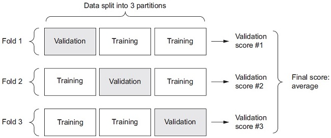
Listing 3.27. K-fold validation
import numpy as np
k = 4
num_val_samples = len(train_data) // k
num_epochs = 100
all_scores = []
for i in range(k):
print('processing fold #', i)
val_data = train_data[i * num_val_samples: (i + 1) * num_val_samples] ❶
val_targets = train_targets[i * num_val_samples: (i + 1) * num_val_samples]
partial_train_data = np.concatenate( ❷
[train_data[:i * num_val_samples],
train_data[(i + 1) * num_val_samples:]],
axis=0)
partial_train_targets = np.concatenate(
[train_targets[:i * num_val_samples],
train_targets[(i + 1) * num_val_samples:]],
axis=0)
model = build_model() ❸
model.fit(partial_train_data, partial_train_targets, ❹
epochs=num_epochs, batch_size=1, verbose=0)
val_mse, val_mae = model.evaluate(val_data, val_targets, verbose=0) ❺
all_scores.append(val_mae)
❶ Prepares the validation data: data from partition #k
❷ Prepares the training data: data from all other partitions
❸ Builds the Keras model (already compiled)
❹ Trains the model (in silent mode, verbose = 0)
❺ Evaluates the model on the validation data
Running this with num_epochs = 100 yields the following results:
>>> all_scores [2.588258957792037, 3.1289568449719116, 3.1856116051248984, 3.0763342615401386] >>> np.mean(all_scores) 2.9947904173572462
The different runs do indeed show rather different validation scores, from 2.6 to 3.2. The average (3.0) is a much more reliable metric than any single score—that’s the entire point of K-fold cross-validation. In this case, you’re off by $3,000 on average, which is significant considering that the prices range from $10,000 to $50,000.
Let’s try training the network a bit longer: 500 epochs. To keep a record of how well the model does at each epoch, you’ll modify the training loop to save the per-epoch validation score log.
Listing 3.28. Saving the validation logs at each fold
num_epochs = 500
all_mae_histories = []
for i in range(k):
print('processing fold #', i)
val_data = train_data[i * num_val_samples: (i + 1) * num_val_samples] ❶
val_targets = train_targets[i * num_val_samples: (i + 1) * num_val_samples]
partial_train_data = np.concatenate( ❷
[train_data[:i * num_val_samples],
train_data[(i + 1) * num_val_samples:]],
axis=0)
partial_train_targets = np.concatenate(
[train_targets[:i * num_val_samples],
train_targets[(i + 1) * num_val_samples:]],
axis=0)
model = build_model() ❸
history = model.fit(partial_train_data, partial_train_targets, ❹
validation_data=(val_data, val_targets),
epochs=num_epochs, batch_size=1, verbose=0)
mae_history = history.history['val_mean_absolute_error']
all_mae_histories.append(mae_history)
❶ Prepares the validation data: data from partition #k
❷ Prepares the training data: data from all other partitions
❸ Builds the Keras model (already compiled)
❹ Trains the model (in silent mode, verbose=0)
You can then compute the average of the per-epoch MAE scores for all folds.
Listing 3.29. Building the history of successive mean K-fold validation scores
average_mae_history = [
np.mean([x[i] for x in all_mae_histories]) for i in range(num_epochs)]
Let’s plot this; see figure 3.12.
Figure 3.12. Validation MAE by epoch
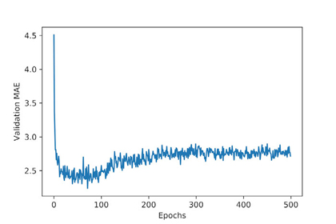
Listing 3.30. Plotting validation scores
import matplotlib.pyplot as plt
plt.plot(range(1, len(average_mae_history) + 1), average_mae_history)
plt.xlabel('Epochs')
plt.ylabel('Validation MAE')
plt.show()
It may be a little difficult to see the plot, due to scaling issues and relatively high variance. Let’s do the following:
The result is shown in figure 3.13.
Figure 3.13. Validation MAE by epoch, excluding the first 10 data points
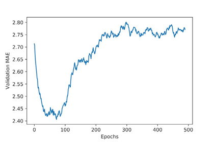
Listing 3.31. Plotting validation scores, excluding the first 10 data points
def smooth_curve(points, factor=0.9):
smoothed_points = []
for point in points:
if smoothed_points:
previous = smoothed_points[-1]
smoothed_points.append(previous * factor + point * (1 - factor))
else:
smoothed_points.append(point)
return smoothed_points
smooth_mae_history = smooth_curve(average_mae_history[10:])
plt.plot(range(1, len(smooth_mae_history) + 1), smooth_mae_history)
plt.xlabel('Epochs')
plt.ylabel('Validation MAE')
plt.show()
According to this plot, validation MAE stops improving significantly after 80 epochs. Past that point, you start overfitting.
Once you’re finished tuning other parameters of the model (in addition to the number of epochs, you could also adjust the size of the hidden layers), you can train a final production model on all of the training data, with the best parameters, and then look at its performance on the test data.
Listing 3.32. Training the final model
model = build_model() ❶ model.fit(train_data, train_targets, ❷ epochs=80, batch_size=16, verbose=0) test_mse_score, test_mae_score = model.evaluate(test_data, test_targets)
❶ Gets a fresh, compiled model
❷ Trains it on the entirety of the data
Here’s the final result:
>>> test_mae_score 2.5532484335057877
You’re still off by about $2,550.
Here’s what you should take away from this example: